幸せな人生は、美しい暮らしから始まります。
美味しいお茶を通して生きる土台である生活を見直し心の中にも心地いい空間をひろげていきましょう。
御所北 静かな住宅街の一角に佇む築100年の小さな町屋をリノベーションした京都小慢。自然生態の台湾、中国茶葉の販売。現代作家、骨董の茶道具を中心に取り揃えたギャラリースペースとなります。
↓店舗のご案内
幸せな人生は、美しい暮らしから始まります。
美味しいお茶を通して生きる土台である生活を見直し心の中にも心地いい空間をひろげていきましょう。
中国茶や台湾茶には千を超える種類があります。そのどれにも豊かな香りの世界が広がっています。
お湯を注いだ瞬間から漂う香りはリラックスを促し、いつも忙しい私たちに大きく息をすることを思い出させてくれます。
茶器は見ているだけで心が落ち着きます。
陶器で出来た茶器は割れやすいので、そっと触れます。その優しさは茶器を巡って自分に戻ってくるでしょう。
水が湧く音、茶杯に注がれるお茶の音が私たちを癒してくれます。
五感の世界をリラックスして味わっていると物を見る目の解像度が上がっていきます。道を歩けば美しい花に気づき、料理を食べれば隠し味に気づくでしょう。気づきが多くなるということは、人生に変化が生まれるということです。
変化は楽しさを生み出し、楽しさは暮らしを整える原動力になります。感性を高め、美しさに気付き、変化を続ける。
それが、暮らしの中に美を見つける源となるでしょう。

2004 台北で予約制レストランとお茶の空間を提案
2007 お茶の空間を「小慢TeaExperience」とする
2012 台北「小慢生活美學」教室を開始
2014 小慢上海教室・東京教室開始
2017 小慢十週年記念を華山1914文創園区で催す
2018 小慢京都 開店
2018 華山1914文創園区にて《日本生活器物展》を三谷龍二氏と合同企画展開催
東洋の文化に深い理解を持つために、書道・花道を学び、東洋の骨董を集めました。
長きにわたりお茶を通し様々な分野の方と交流を深め、展覧会を行っています。国内外でお茶会、花道、料理、工芸品など職人や芸術家をみなさんに紹介し、侘び寂びという美意識、人々にの暮らしの中に「慢」（ゆっくり）を提案していきたいと思っています。
2004 台北で予約制レストランとお茶の空間を提案
2007 お茶の空間を「小慢TeaExperience」とする
2012 台北「小慢生活美學」教室を開始
2014 小慢上海教室・東京教室開始
2017 小慢十週年記念を華山1914文創園区で催す
2018 小慢京都 開店
2018 華山1914文創園区にて《日本生活器物展》を三谷龍二氏と合同企画展開催
東洋の文化に深い理解を持つために、書道・花道を学び、東洋の骨董を集めました。
長きにわたりお茶を通し様々な分野の方と交流を深め、展覧会を行っています。国内外でお茶会、花道、料理、工芸品など職人や芸術家をみなさんに紹介し、侘び寂びという美意識、人々にの暮らしの中に「慢」（ゆっくり）を提案していきたいと思っています。
閑静な大安区にある台北小慢。風が抜ける店内では野放茶、自然生態茶などをお飲みいただけます。月に一度国内外の作品をご覧いただく企画展も開催しております。
↓店舗のご案内
2019. 5. 1 – 5. 2
展示内容展示内容展示内容展示内容展示内容展示内容展示内容展示内容展示内容展示内容展示内容展示内容展示内容展示内容展示内容展示内容展示内容展示内容展示内容展示内容展示内容展示内容展示内容展示内容展示内容展示内容展示内容展示内容展示内容展示内容展示
2019. 5. 1 – 5. 2
展示内容展示内容展示内容展示内容展示内容展示内容展示内容展示内容展示内容展示内容展示内容展示内容展示内容展示内容展示内容展示内容展示内容展示内容展示内容展示内容展示内容展示内容展示内容展示内容展示内容展示内容展示内容展示内容展示内容展示内容展示
106台北市大安區泰順街16巷39號
国立台湾師範大学周辺、MRT台電大樓站又はMRT古亭站から徒歩約10分
→Google Maps
月曜定休 10:00 – 18:00
xiaoman.cs@gmail.com
御所北 静かな住宅街の一角に佇む築100年の小さな町屋をリノベーションした京都小慢。自然生態の台湾、中国茶葉の販売。現代作家、骨董の茶道具を中心に取り揃えたギャラリースペースとなります。
↓店舗のご案内2019. 5. 19 – 6. 17
今回の個展のテーマはアリスのお茶会。
オブジェをメインに作っている私が、自分の手にしか出せないフォルムや同じものが二つとしてない、不思議な器のワンダーランドにアリスになったような気持ちで迷い込んでいただけると嬉しいです。
西家智津子（CHIZUKO NISHIKE)
大阪芸術大学大学院 芸術研究科博士前期 芸術制作 修了
デザイン事務所・美術研究所（絵画教室講師）勤務を経て
現在atelier NICIQUE(奈良)にて制作。
2002年より関西を中心に個展を開催。
昨年2018年は台北での初個展。
喫茶のご案内
5月19日（日曜）
12時〜
14時〜
16時〜
京都小慢2階
参加費 2.500円
今展示に合わせ、喫茶のご案内です。
2種類のお茶とご一緒に奈良の「パティスリークリアン」より西家さんの展示会コンセプトに合わせた出来たての生菓子&焼き菓子をお召し上がりいただけます。
（※ご予約優先とさせていただきます）
ご希望のお時間とお値段をお知らせ下さいませ。
展示会期間中、焼き菓子と台湾茶のティーセットもご用意致しております。
田中千佳子
奈良生まれ
20代後半 インテリアデザインの世界から一転
プロのパティシエを目指す
クリアンに在籍中
LA VIEILLE FRANCE 木村シェフの勧めでパリの職人育成学校 BELLOUET CONSEIL に留学
帰国後独立し
奈良県桜井市にて 焼き菓子の工房 “ChiccA “をオープン
その後クリアンのシェフと結婚
現在に至る
2017年4人からなるユニット
「六香」のメンバーとしてパリのエスパス・バルタン・ポワレにて”旅する茶箱展”に参加
お菓子のコフレ製作発表
キラキラとしたパリのお菓子も好きだけれどヨーロッパの田舎で見かける素朴な伝統菓子や修道院のお菓子に心惹かれ続けています。
予約問い合わせ
京都小慢
xiaoman.kyoto@gmail.com
2019. 5. 19 – 6. 17
今回の個展のテーマはアリスのお茶会。
オブジェをメインに作っている私が、自分の手にしか出せないフォルムや同じものが二つとしてない、不思議な器のワンダーランドにアリスになったような気持ちで迷い込んでいただけると嬉しいです。
西家智津子（CHIZUKO NISHIKE)
大阪芸術大学大学院 芸術研究科博士前期 芸術制作 修了
デザイン事務所・美術研究所（絵画教室講師）勤務を経て
現在atelier NICIQUE(奈良)にて制作。
2002年より関西を中心に個展を開催。
昨年2018年は台北での初個展。
喫茶のご案内
5月19日（日曜）
12時〜
14時〜
16時〜
京都小慢2階
参加費 2.500円
今展示に合わせ、喫茶のご案内です。
2種類のお茶とご一緒に奈良の「パティスリークリアン」より西家さんの展示会コンセプトに合わせた出来たての生菓子&焼き菓子をお召し上がりいただけます。
（※ご予約優先とさせていただきます）
ご希望のお時間とお値段をお知らせ下さいませ。
展示会期間中、焼き菓子と台湾茶のティーセットもご用意致しております。
田中千佳子
奈良生まれ
20代後半 インテリアデザインの世界から一転
プロのパティシエを目指す
クリアンに在籍中
LA VIEILLE FRANCE 木村シェフの勧めでパリの職人育成学校 BELLOUET CONSEIL に留学
帰国後独立し
奈良県桜井市にて 焼き菓子の工房 “ChiccA “をオープン
その後クリアンのシェフと結婚
現在に至る
2017年 4人からなるユニット
「六香 」のメンバーとしてパリのエスパス・バルタン・ポワレにて”旅する茶箱展”に参加
お菓子のコフレ製作発表
キラキラとしたパリのお菓子も好きだけれどヨーロッパの田舎で見かける素朴な伝統菓子や修道院のお菓子に心惹かれ続けています。
予約問い合わせ
京都小慢
xiaoman.kyoto@gmail.com
京都市上京区幸神町313
京阪電車「出町柳」駅より徒歩10分
市営地下鉄烏丸線 今出川駅 3番出口から徒歩11分
京都市バス 河原町今出川バス停から徒歩5分
→Google Maps
火・水・木曜定休 12:00 – 18:00
xiaoman.kyoto@gmail.com
お茶 高いものが良いお茶ではなく小さな農家さんたちが無農薬無肥料にこだわり
家族と一生懸命に作られた自然で清潔なお茶
そして毎日飲み続けたいと思えるお茶が私にとって貴重品です
教室の内容は、中国茶の六大茶の分類、旅のお茶、淹れ方の紹介、道具の使い方、季節のしつらえ等、
中国茶の自由な楽しみ 奥深さを一緒に学びませんか？
※1年間を通じて中国茶全般の基礎を学ぶ稽古です
より深く中国茶を感じていただくために年間を通しての受講をおすすめいたします
（詳細は各教室のメールアドレスよりお問い合わせください）
毎月1回 全6クラス
各クラス定員10名
xiaoman.cs@gmail.com
毎月1回 全6クラス
各クラス定員10名
xiaoman.kyoto@gmail.com
隔月1回 全6クラス
各クラス定員10名
xiaoman.tokyo@gmail.com
詳細は以下のホームページをご覧ください。
→ギャルリ百草
JP / CH / EN